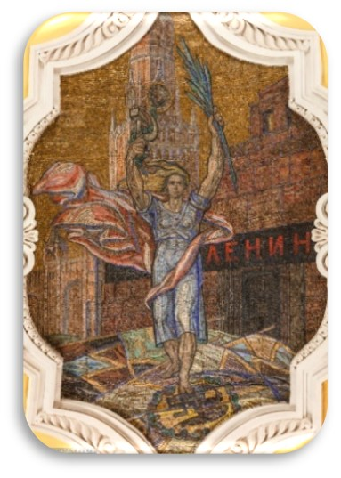
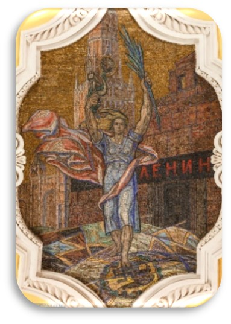

К У Л Ь Т У Р Н А Я
К А Р Т А
М Е Т Р О
 Культурная карта метро - это интерактивная карта Московского метрополитена, с помощью которой пользователи могут познакомиться с историей определённой станции и узнать какие достопримечательности и культурные места находятся возле неё.
Культурная карта метро - это интерактивная карта Московского метрополитена, с помощью которой пользователи могут познакомиться с историей определённой станции и узнать какие достопримечательности и культурные места находятся возле неё.


 
